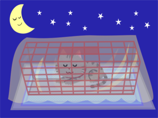
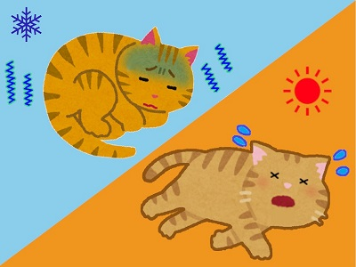
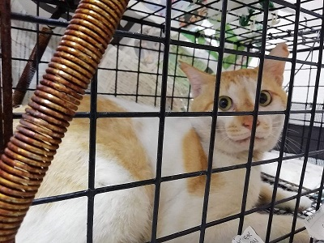

（予約外手術の対応について）
・本院は基本的に予約制です。
・一方で、予期せぬ状況で猫が捕獲された場合、別途料金を加算して対応することがあります。
・当日に手術を受けられない場合は、入院費が発生することがあります。
・追加料金は日によって異なります。特に休診明けの日曜日は混雑する傾向にあります。
・来院前に必ずお電話でご相談下さい。急な来院には手術中又は不在等につき対応できない可能性があります。
休診日や混雑などで本院が対応できない場合は、自宅で猫を待機させる必要があります。
★ 以下の記事を参考にして下さい。

猫を自宅で待機させる場合の注意点

捕獲した猫の温度管理
自宅待機させる事が出来る環境なら捕まえてからご連絡頂いても大丈夫ですが…
ただし・・・➡
また本院はキャンセルは問いません。捕まるかどうか判らない外猫でも、ご予約枠の確保、またはご相談下さい。

キャンセルを申し訳ないと思わなくても大丈夫です